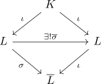

normale Körpererweiterung induziert K-Automorphismus
Satz
Sei $K$ ein Körper $L/K$ ein algebraische Körpererweiterung und $\overline{L}$ ein Algebraischer Abschluss
TFAE:
- $L/K$ ist normal
- jeder K-Homomorphismus $\sigma: L \rightarrow \overline{L}$ induziert einen eindeutigen K-Automorphismus.
\begin{align*}
\overline{\sigma}: L \rightarrow L
\end{align*}
gegeben durch die Einschränkung $\sigma_{\vert E}$

Beweis
siehe: normale Körpererweiterung und Zerfällungskörper
1) $\implies$ 2)
Sei $L$ Zerfällungskörper von $\mathfrak{F} \subseteq K[X]$ und $\sigma: L \rightarrow \overline{L}$ ein K-Homomorphismus Dann gilt $L \cong \sigma[L]$ und somit ist $\sigma[L]$ Zerfällungskörper von $\sigma[\mathfrak{F}]$.
Da $\sigma$ eingeschränkt auf $K$ die identität ergibt, folgt
\begin{align*}
\sigma[\mathfrak{F}] = \mathfrak{F}
\end{align*}
und somit ist $\sigma[L]$ auch ein Zerfällungskörper von $\mathfrak{F}$
Eindeutigkeit
folgt da $\iota$ als Körperhomomomorphismus injektiv ist.